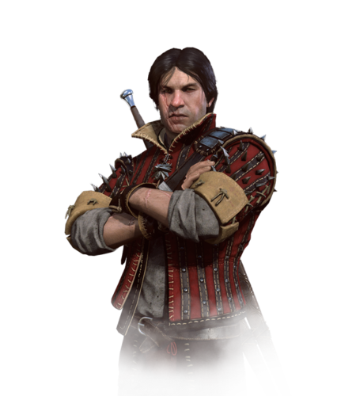

Во-первых,эта франшиза запоминается нам мрачностью всего происходящего на экране и за его пределами.Мы наблюдаем за мерзкими и страшными,для нашего времени,поступками,но в то же время нормой для аналогии,средневековья.
Во-вторых,мы любим Ведьмака за историю,за которой наблюдаем,за проработкой мира,за бэкграундом персонажей.
Разработчики весьма старательно подошли к логике повествования и самого происходящего внутри мира.Они отлично подошли к подаче истории через пейзажи,диалоги и квесты.
В третьих,мы любим ведьмака за харизму геров,за логичность их поступков относительно их характера и ситуации.
Пожалуй приведу описание ведьмаков из 3 части.
Ге́ральт из Ри́вии (ориг. Geralt z Rivii) — главный герой литературной саги и протагонист последующих игр, ведьмак, профессиональный охотник на монстров, один из лучших фехтовальщиков Севера.
Цири (ориг. Ciri) — Дочь цинтрийской принцессы Паветты и князя Дани, внучка Калантэ и Рёгнера из Эббинга, королей Цинтры, дитя Старшей Крови, потомок Лары Доррен аэп Шиадаль и Крегеннана из Леды.
Ламберт (ориг. Lambert) — второстепенный персонаж литературной саги, а также игр Ведьмак и Ведьмак 3: Дикая Охота, самый молодой из выживших ведьмаков Школы Волка
Эскель — опытный и искусный охотник на чудовищ, ничем не уступающий Геральту, однако он не снискал такую славу, как его коллега по цеху.А также является одногодкой Геральта

Весемир (ориг. Vesemir) — персонаж литературной «Саги о Ведьмаке », написанной Анджеем Сапковским, а также игр Ведьмак и Ведьмак 3: Дикая Охота.Старейший и самый опытный ведьмак на континенте.
А также Папич-Величайший.Профессиональный ведьмак,ой,стример из Винницы,любимец всея СНГ,а так же,просто умнич и высокоинтеллектуал,социофоб и аскет.